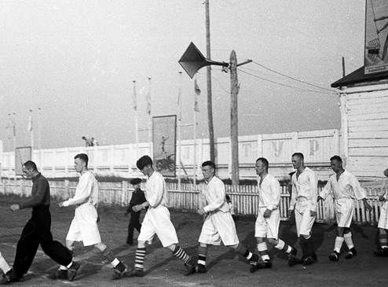
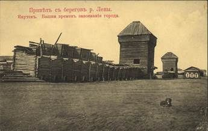
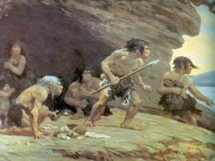
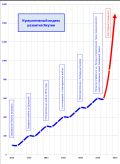
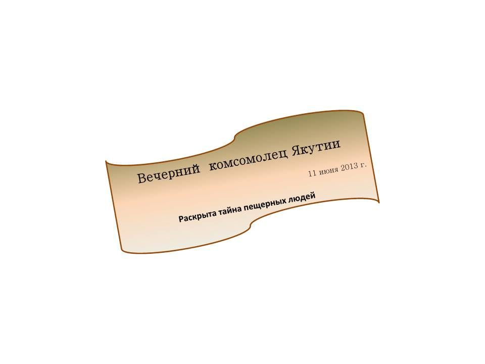
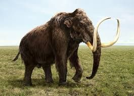

Страницы авторов "Тёмного леса"
Литературный Кисловодск и окрестности
Пишите нам! temnyjles@narod.ru
Москва, сентябрь 2015 г.
"Якутианские хроники" появились на свет как результат совместной работы отдела Планирования Бизнеса и отдела Контроля Бизнеса в рамках программы по составлению аналитических отчетов о социально-экономической ситуации в регионах и ее влиянии на текущее состояние и прогнозы развития отдельно взятых секторов экономики указанных регионов.
Первый из таких отчетов был сделан по Республике Саха (Якутия). Поражает скорость, с которой он был представлен. Для его завершения потребовался лишь 1 месяц, в то время как аналогичные отчеты по развитию регионов, рождаемые в недрах, например, Минэкономразвития, порой требуют для своей разработки 1 года и более, и над ними работают целые крупные отделы из маститых специалистов, да еще привлекающих часто сторонние организации.
Обращаем также внимание на оригинальную структуру отчета в виде отдельных фрагментов переписки между отделами. Несмотря на такую фрагментарность, отдельные части отчета соединены друг с другом как явными, так и скрытыми логическими связями, поэтому отчет представляет собой единый и неделимый документ. Попытки вычленить из него отдельные фрагменты могут привести к потере целостности его восприятия, не говоря уж о том, что в соответствии с законом о защите авторских прав, любое копирование отчета или его частей возможно только с письменного согласия его авторов.
Привет Игорь!
По Якутии высылаю 1-ый куплет Гимна республики Саха.
По своей сути, любой гимн уже является квинтэссенцией того, чему он посвящен, и, таким образом, каждый гимн просто по определению обязан содержать полную характеристику своего объекта. В этом случае задача человека, изучающего регион, заключается лишь во вдумчивом и внимательном гимнопрочтении ...
Сахам сирэ дьоллоох тускуга
Саһарҕалыы ыҥыра ыллыыр.
Илинтэн арҕаа ол кустуга
Алмаас таас курдук сандаара сырдыыр
Якутия, ты светом зари
К добру и счастью всех нас зовёшь,
Алмазной радугой ты горишь
И нас к победам грядущим ведёшь.
Владимир!
Благодарю, но позволю заметить, что первый куплет хоть и представляет для нас особую ценность, без второго сложить полное представление о регионе достаточно сложно.
По возможности будем ждать его от Вас, по традиции также и на языке оригинала.
Привет Игорь!
Высылаю обнаруженную не так давно очень интересную историю, объясняющую, почему всех нас задевает так за живое гимн Якутии.
Вот эта история:
Рассказал нам ее один старый якутский охотник.
Много-много лет назад в Якутии жил другой охотник по имени Каныбалдыр Пучкинэ.
Он отличался очень пытливым умом и любознательностью.
И однажды задумал он обойти всю Якутию по периметру.
Долго шел отважный герой, пересекая горы, леса и реки, и вот, наконец, вернулся домой.
Его, правда, сильно удивил тот факт, что, когда он уходил, у него было двое детей, а когда вернулся обратно домой, их стало восемь.
Пораженный этим обстоятельством, решил он тогда пересечь родную Якутию по диагоналям, выйдя, таким образом, к месту, где находится сердце Якутии, которое бы объяснило ему столь бурный рост его семьи.
Но подул злой ветер Борей, и унесло нашего героя сначала в океан, затем подхватили его океанические волны и перенесли от Северного к Южному полюсу.
Таким образом, именно якуты на самом деле первыми открыли Антарктиду.
Для зимовки отплыл он от Антарктиды в более теплые края и остановился в месте, которое, как оказалось потом, было Эфиопией.
Там от солнечных лучей он сильно загорел, а затем случайно был пойман английскими колонизаторами.
Он пытался объяснить своим похитителям, что темная кожа - это всего лишь загар и, в знак доказательства, стал показывать им свои незагорелые места.
Но злобные колонизаторы приняли эти попытки за варварские выходки идолопоклонника, а в дальнейшем подарили своего пленника русскому императору Петру I.
Имя Каныбалдыр Пучкинэ из-за сложности произношения трансформировалось в Каннибала - Ганнибала - первого в роду Пушкиных.
Затем, как мы уже знаем из школьной истории, его потомки разъехались по всему свету, а один из них вновь вернулся в родную Якутию.
Именно он и написал Гимн Якутии.
Связь имен
Наличие ген прадедушки явно чувствуется в этом нетленном произведении, и именно поэтому оно производит на всех нас столь сильное впечатление.
Владимир, доброе утро!
Эта трогательная этнографическая история не оставит никого равнодушным.
Привет Игорь!
Продолжаю высылать (по частям) материалы, которые лягут в основу будущего исследования ситуации в Якутском регионе.
В частности, каждая из строк Гимна Якутии еще ждет своего исследователя (и, как минимум, такая работа потянет на докторскую, а то и член-корреспондентскую степень).
Для лучшего понимания 4-ой строки "И нас к победам грядущим ведешь ...", высылаю фотографию футболистов Якутии, явно идущих к такой победе...
Об этом свидетельствует их несколько странная, но в то же время очень бодрая и целеустремлённая походка.
Как можно заметить, особенно выделяются:
1) Человек N1 - Бодрый, явный лидер, протаптывающий наиболее короткий путь к победе.
2) Человек N4 - Целеустремленный, без тени сомнения двигающийся к выбранной цели.
3) Человек N6 - Пока задумчивый, но обладающий большим потенциалом развития.
Об этом говорит тот факт, что, именно начиная с него, все идут не в ногу с лидером, а значит, человек N6 задает свой, неповторимый стиль движения к новой цели (NN2-5, при всей кажущейся бодрости, лишь повторяют движения лидера).
4) Интересен и особый поворот левой ноги человека N7, сопровождаемый оттопыриванием рук. Возможно, он только что поменял порядок ног, чтобы лучше соответствовать зарождающемуся новому лидеру.
Впрочем, все, ух, как хороши!

Владимир!
Мне остается только еще раз поблагодарить Вас за прекрасную подборку материала и комплексный анализ одного из фрагментов мозаики на пути к пониманию особенностей развития наших регионов.
Позволю себе добавить, что юный мальчуган, повторяющий движения за взрослыми, олицетворяет весь тот энтузиазм, на котором воспитывалось советское поколение, совершившее прорыв в строительстве, науке и технике!
Ждем новых интересных открытий в ближайших материалах.
Привет Игорь!
Я очень рад, что в твоем лице нашел истинного ценителя материалов по Якутии.
Не скрою, что я специально не стал акцентировать внимания на мальчике, а ведь именно он и является олицетворением доминирующей идеи всего сюжета.
То, что тебе удалось раскрыть эту идею, и та легкость, с которой это было сделано, говорит о многом ...
Теперь о новом сюжете, уверен, позволяющем внести гораздо больше ясности в анализ ситуации в регионе. Мало кто знает, что в XVII веке, при завоевании Якутии, якуты, из-за поборов местной власти оказали отчаянное сопротивление, осадив на время Якутск, но, в конце концов, потерпели поражение.
Этому факту якуты посвятили сагу о тех событиях.
Из-за цензуры сначала царской, а затем и советской власти она никогда не публиковалась, а лишь предавалась из уст в уста.
Теперь, в эпоху демократии, я думаю, настало время предать ее гласности.

Владимир!
Возможно один из диалогов Платона, а именно "Менон"**), посвященный беседе Сократа о добродетели, поможет нам лучше понять, что стоит за поступками якутов.
*) Согласно историческим данным, самый первый город Якутск был построен неудачно и смыт рекой Леной при изменении ее русла. В дальнейшем город был перенесен в более безопасное место, где и находится поныне.
**) Ссылка в Интернете: http://psylib.org.ua/books/plato01/17menon.htm
Игорь!
Ты совершенно прав, передвинув шкалу наших исследований Якутии в античность.
Эта та база, от которой в финальном варианте отчета мы и будем отталкиваться при анализе ситуации в этом регионе.
Сократ всегда забивал и будет забивать "колышки общечеловеческих ценностей", указывая нам "добродетельный путь" и каждый раз, в мягкой форме возвращая нас на тропу истины в случае наших сомнений и метаний...
Теперь еще один мозаичный фрагмент ситуации в Якутии.
В 2013 году при праздновании "Дня Независимости республики Саха" одним из запланированных мероприятий должен был стать премьерный показ нового спектакля.
К сожалению, этот показ сопровождался странными событиями и слухами.
Сразу же после премьеры спектакль был снят из репертуара и больше никогда не возобновлялся.
Нашлись даже те, кто говорил, что были звонки из Москвы, но звонки-то к делу не подошьешь.
Тем не менее, местным краеведам удалось скопировать запись этого спектакля со скрытой камеры, установленной в театре, а затем сделать его полную стенограмму.
Высылаю эту стенограмму в приложении.
Там всего 3 страницы, спектакль был короткий.
Но по своей насыщенности и эмоциональности, мне кажется, он мог бы обойти многие многочасовые репертуарные спектакли обеих столиц.
Ведь не секрет, что длинные спектакли делаются часто только ради антрактов, во время которых зрители вынуждены тратить деньги в дорогих буфетах ...
Действие происходит в Якутском Центральном Национальном Драматическом театре
Категория для просмотра: 16+
Происходит внутри избы зажиточного якута Арыхлана Сидорова.
Все сидят за столом. Блюмкин в центре, на председательствующем месте.
Кроме Уйгууны, она хлопочет около печи.
Над столом тускло светит "лампочка Ильича" *).
На столе остатки недоеденной пищи, под столом объедки и окурки.
Тов. Блюмкин: Товарищи! Только что пришла телеграмма из центра, подписанная самими товарищами Лениным и Троцким!
Все: Читайте! Скорее читайте!
Тов. Блюмкин встает и достает из внутреннего кармана кожанки бумагу:
Срочная. Правительственная.
К немедленному исполнению на местах всеми Советами и Комбедами.
С завтрашнего дня в связи с революционной целесообразностью и непрекращающимися попытками мировой буржуазии и контрреволюционных элементов внутри страны свергнуть Советскую власть, начать компанию продразверстки по изъятию излишков продовольствия у зажиточной части населения.
В целях ускорения данной акции, провести показательные аресты и расстрелы наиболее контрреволюционных элементов из числа бывших помещиков, крупной буржуазии и офицеров.
Москва, Кремль.
Подписано - Ленин, Троцкий.
Матрос Железняк (ударяя кулаком по столу и бросая очередной окурок на пол):
Верно! В самую точку!
Тов. Блюмкин: Да, товарищи, мы тут правильно понимаем линию партии. И совершенно справедливо мы еще вчера реквизировали избу гражданина Сидорова для организации нашего первого в Якутске комитета бедноты! Ура, товарищи!
Все встают, кроме Арыхлана Сидорова, поют Интернационал, затем снова садятся.
К столу подходит Уйгууна и ставит на стол миску с горячими пирожками:
А вот кому пирожков свеженьких, только что испекла...
Все берут по пирожку и начинают есть. Арыхлан тоже тянется к пирожку, но матрос Железняк отодвигает от него миску:
А ты, куда, контрик! Ешьте еще, товарищ Блюмкин.
Тов. Блюмкин берет еще один пирожок и съедает. Все смотрят на него.
Тов. Блюмкин (выкидывая бумажку и крошки от пирожка под стол):
Да, товарищи, так на чем мы остановились?
Железняк: Давайте решать вместе, кого будем ставить к стенке.
Оболенский, до того молчавший:
Господа! Cher Amis! **) Ну, нельзя же вот так, сразу к стенке. Только суд, суд из присяжных, может решить, виновен человек или нет. Вот я помню ...
Но его обрывает Железняк:
К черту суд! Мы на балтфлоте все решали только исходя из революционной целесообразности! Вот ты, контра (обращаясь к Арыхлану), где спрятал излишки?
Арыхлан: Нет больше излишков. Все, что было, вы уже съели.
Железняк: Издеваться над революцией!
Достает из-под бушлата наган и направляет его на Арыхлана
Оболенский: Господа, прошу вас, не надо насилия...
Гаснет свет, раздаются выстрелы, звук падающего тела и предсмертные крики.
Свет зажигается, актеры выходят на поклоны.
Публика аплодирует.
Арыхлана на поклоны выносят на носилках.
(Когда свет погас, он споткнулся о декорацию и действительно повредил ногу)
Поэтому крики, слышимые зрителями, были не театральными, а настоящими.
Актеров долго не отпускают со сцены и каждому дарят цветы.
Наконец, занавес опускается, и публика направляется к выходу.
Но, в дверях выход ей перекрывают люди в форме спецназа с автоматами.
ЯКУТИАДА
Революционно-музыкальная драма в 2-х действиях с интерактивным финалом
Действующие лица:
Тов. Самуил Блюмкин Уполномоченный из центра
Железняк Балтийский матрос, верный ленинец
Оболенский Евгений Петрович Из бывших дворян, потомок декабристов
Арыхлан Сидоров Зажиточный якут
Уйгууна Сидорова Его жена
Кундул Иванов Мэр города Якутска, бессменно на посту с 1991 года
Толпа Частично состоит из массовки и представляет жителей Якутска, спецназ и чиновников. Частично толпа просто нарисована на занавесе, декорациях и стенах театра, что создает ощущение ее постепенного перехода в зрительный зал
Действие первое
*) Первую электростанцию в Якутске загнивающий царский режим запустил в действие 9 августа 1914 года. Поэтому ко времени, о котором говорится в пьесе, электричество вполне могло быть в доме зажиточного жителя г. Якутска. "Тусклость" лампочки, возможно, связана с уже начавшейся в стране разрухой и вызванными ей перебоями в поставках топлива (Примечание рецензента).
**) Правильно - Chers amis [шэр з'ами] - Возможно, что в результате нахождения в течение длительного времени вдали от мировых культурных центров, Евгений Петрович частично потерял навыки разговорной французской речи. А, может быть, здесь была допущена ошибка краеведами, которые при стенографировании спектакля с записи, сделанной скрытой камерой, не расслышали звук "з" (Примечание рецензента)
На сцену выходит мэр города Якутска в сопровождении чиновников местной администрации.
Чиновники администрации поют 1-ый куплет Гимна Якутии.
Слышится некоторая разноголосица, так как часть чиновников поет русский текст гимна, а другая часть - якутский. Те из чиновников, кто не знает наизусть слова гимна, делают вид, что поют, периодически открывая и закрывая рты.
Затем мэр Якутска, Кундул Иванов, выходит вперед. На его лице видны одновременно и твердая решимость действовать, и уверенность в своих силах, и любовь к своему народу.
Ясно, что такое сочетание возможно только в результате длительного вхождения во власть.
Кундул Иванов: Уважаемые сограждане! Якутианцы! Просьба всех вернуться на свои места, Спектакль еще не закончен.
Публика неохотно снова рассаживается по своим местам.
На лицах многих написано недоумение.
Кундул Иванов: Уважаемые зрители! Все вы читали в афишах, что деньги за проданные к спектаклю билеты будут направлены в городской бюджет. Но этих средств все равно недостаточно, чтобы покрыть его дефицит.
Еще 10 лет назад мы подписали соглашение с Аляской о том, что этот американский штат станет нашим побратимом. И, как вы все хорошо знаете, мы поставили перед собой непростую задачу догнать и перегнать наших американских партнеров. К сожалению, по уровню жизни это удалось сделать только мне и моим прямым заместителям. Остальные жители Якутска просто проигнорировали наш призыв!
Поэтому теперь мы приняли непростое для нас решение. Сейчас каждый из вас должен будет сдать излишки своих средств в специальный фонд по обгону Аляски, созданный нашей Администрацией. Банковские карточки тоже принимаются, для чего на выходе мы установили терминалы нашего Национального Якутского банка, оснащенные специальной кнопкой "Мгновенный платеж в пользу Администрации". Это отечественная разработка наших молодых якутских программистов!
Я верю в вас! Смелее вперед, якутианцы!
Каждый сдавший получит в подарок от нас горячий пирожок!
Раздаются робкие аплодисменты.
В первых рядах, где сидят клакеры, аплодисменты переходят в овации.
Зрители по одному покидают театр, сдавая наличность и платя кредитками. Наиболее продвинутые пользователи нажимают на кнопку "мгновенного платежа".
На выходе они получают по пирожку, которые раздает Уйгууна в национальной одежде.
Занавес опускается окончательно. Гаснет свет. Зрительный зал пустеет.
Конец спектакля.
Владимир!
Совершенно ясно, что только политическая близорукость театрального истеблишмента Якутии могла помешать выходу этой постановки на самый высокий уровень. Нелепая ситуация с повреждением ноги Арыхлана лишний раз подчеркивает неуклюжую позицию уполномоченных органов.
Мы должны использовать все имеющиеся ресурсы, чтобы обличительная драма в лучших традициях "Ревизора" была представлена широкому кругу зрителей.
А вообще в последнее время на долю жителей Якутии неожиданно выпало (а может и вполне закономерно) очень много происшествий, которые, несомненно, должны возродить интерес к этому необыкновенному региону.
Буквально сегодня палеонтологи обнаружили в Якутии скелет мамонта, жившего 500 тысяч лет назад*).
В качестве наглядного примера, помогающего лучше понять, с какими величественными находками мы имеем дело, я высылаю изображение того, что происходило в Якутском регионе всего лишь 35 тысяч лет назад.

*) Ссылка в Интернете: http://lenta.ru/news/2015/09/18/mamant/
Привет Игорь!
Я уверен, что найденный мамонт займет свое достойное место в истории республики Саха, а также в нашем скромном исследовании Якутии.
Но подождем результатов его лабораторного анализа...
Продолжая тему, высылаю очередной материал.
Как известно, якуты при своем переселении из районов современной Бурятии и Монголии сильно потеснили племена эвенков, обитавших на территории нынешней Якутии.
Тем не менее, они переняли некоторые обычаи эвенков, в частности, их любовь сообщать в песнях о том, что они видят и о чем думают в данный момент времени.
Эти обычаи явились ценнейшей находкой для спецорганов, так как руководство местного КГБ было уверено, что по этим песням можно очень точно судить о настроениях населения и об его отношении к советской власти.
Тем более, что якуты во время исполнения песен вели себя как глухари во время тока, что позволяло агентам КГБ с легкостью стоять с ними рядом, записывая песни и сдавая их потом в спецхран для последующего анализа.
При известных событиях 1991-1993 годов, сопровождающихся взятием штурмом дома местной Администрации г. Якутска, многие из этих бесценных материалов исчезли.
Тем не менее, благодаря стараниям полковника госбезопасности в отставке Белозубова, часть архива удалось сохранить.
Правда, злые языки утверждали, что Белозубов - это агентурная кличка, а настоящая фамилия полковника - Твердолобов.
Истина оказалась, как всегда, посередине.
Вот библиографическая ссылка:
Полковник Твердозубов. Поэтический сборник "Мысли вслух"
г. Якутск, Издание ГЛАВЛИТ, 1996 г., 320 стр., тир. 100 экз.
Приводим одну из песен этого сборника, показавшуюся нам особенно интересной.
Она написана в достаточно редком стиле "наивного реализма"
История этой песни следующая.
Один молодой якут заболел свинкой, а затем вылечился благодаря отвару корня Адониса, растущего на берегах Лены.
Отвар готовится на молоке, отсюда и содержание песни.
Думаю, что непредубежденный читатель оценит оптимизм и идущую от самой глубины души вылечившегося якута энергетику этой, с первого взгляда, несколько по детски наивной песни.
Так как нужно сравнивать сравниваемое, то, думаю, наступил момент для опубликования всего текста Гимна Якутии. Поражает и тот факт, что объемы двух песен практически совпали!
Простая, но искренняя песня якута, уверен, смотрится намного выигрышнее официально сухого текста Гимна.
Песня якута, выздоровевшего после свинки
Я здоров, здоров, здоров,
Как тысяча коров,
Как две тысячи коров,
Я здоров, как стадо коров!
А телята большие давно,
Но по-прежнему есть молоко,
И коровы дают его нам легко,
Подставляй лишь большое ведро!
А хозяин коров очень крут,
И в руках у него большой кнут,
Но не любит пастух молока,
Водку пьет он с утра до утра!
А коровы травку едят,
И порой они громко мычат,
Вспоминают коровы быка,
Что приходит к ним иногда!
Я же ем сметану и сыр,
Часто пью молоко и кефир,
Вспоминаю стадо коров,
Потому всегда я здоров!
Гимн Якутии
Якутия, ты светом зари
К добру и счастью всех нас зовёшь,
Алмазной радугой ты горишь
И нас к победам грядущим ведёшь.
Припев:
Цвети и крепни, родная земля,
Расти и славься, Якутия.
Краса и гордость России ты всей,
Тебя раздольней нет и щедрей.
Привольно Лена наша течёт,
Водой живой до края полна.
Она согласье и силу несёт,
Дарует мир всем народам она.
Припев
Земля Саха, святыни твои
С вершин веков напутствуют нас.
Мы путь продолжили предков своих,
И с честью мы их исполним наказ.
Припев
Владимир, доброе утро!
Очень сложно передать эмоции, которые испытываешь, соприкоснувшись с тонкой душевной организацией молодого якута, исполняющего настолько открытую и искреннюю песнь.
С помощью таких произведений мы можем ненадолго отвлечься от окружающей рабочей суеты и почувствовать себя чуть ближе к природе.
Безусловно, внимание читателя привлекает и полковник Твердолобов (он же Белозубов, он же Твердозубов), который сохранил этнографический материал для будущих поколений.
Несмотря на суровую фамилию, он видимо оказался таким же мягким и душевным человеком, как и молодой якут.
Возможно, что свет и добро, которое исходит от якутской земли, остаются в душе каждого побывавшего там человека.
А мы с нетерпением ждем новых интересных фактов об этом уникальном регионе нашей большой страны.
Привет Игорь!
К сожалению, все заканчивается и, следовательно, подходит к концу и наше исследование Якутского региона.
Высылаю последний материал, из которого видно, что развитие философской мысли, начавшись в Древней Элладе, нашло свое достойное продолжение и на суровых берегах Лены.
Данный фрагмент - последний только по счету.
Несмотря на явно заимствованную форму изложения, он содержит вполне оригинальные мысли, основанные на очень древнем учении об окружающем мире, сохраненном до наших дней шаманами Якутии.
Мы, конечно, прекрасно понимаем, что, если решимся переработать данный отчет в финальный продукт, например, в монографию, то мы будем вынуждены заменить индуктивный метод дедуктивным, чтобы вместе с нашим читателем двигаться от общего к частному. И в этом случае данный фрагмент располагался бы в начале книги.
Это соответствовало бы универсальному рецепту, которому, к сожалению, не все и не всегда следуют:
- Вначале и любой человек, а также любая из структур, людьми созданная, будь то небольшое сообщество, значительное по размеру объединение, или целое государство, должно выработать свою идеологию, разобравшись с базовыми понятиями строения окружающего мира и своими целями развития в нем;
- Затем, на основании этой идеологии, создаются частные методологии для решения уже конкретных задач;
- Конечно, любая идеология, будь она само совершенство, есть только один из аспектов бесконечного в своем познании мира, поэтому ценность идеологии заключается не в ее безгрешности. Со временем любая идеология устаревает и будет, без сомнения, заменена на более совершенную теорию, что мы постоянно и наблюдаем в истории. Ценность текущей идеологии заключается в возможности с ее помощью добродетельно (как не вспомнить Сократа) решать наши практические задачи. Это касается, в том числе, и развития Якутского региона.
Таким образом, хотя мы и начали свое исследование с анализа Гимна Якутии, этот раздел, если говорить о пока еще не появившемся финальном труде, должен был бы, как частный случай, размещен в конце. Но сейчас, работая над отчетом, мы сохраняем ту логику, какая сформировалась (что удивительно, часто даже помимо нашей воли) при его написании.
Кроме того, мы просто обязаны сказать несколько теплых слов о Гимне. Ведь именно благодаря ему в нас пробудилась неутомимая жажда творчества. А ведь такие моменты и являются тем, что мы называем вдохновением, полетом мысли и рождением чувства абсолютной свободы, ради чего, в конечном счете, мы и живем.
Так пожелаем же себе удачи на этом пути!
Дитмар - Заезжий немецкий профессор, заведующий кафедрой марксизма-ленинизма Лейпцигского университета, доктор экономических наук, лауреат конкурса на "Лучшее исследование социологических факторов экономического роста планового хозяйства", автор монографии "Особенности диктатуры пролетариата в условиях народной демократии", почетный член "Общества любителей Магдебургского права".
Тускул - Якутский шаман
Дитмар - Что ты скажешь мне, Тускул, о пространстве и времени, определяют ли они свойства материи, или сами образуют то, что мы называем материей?
Тускул - Прежде именно германцы славились среди европейских народов своей мудростью и познаниями в философии. Что же заставило тебя потратить столько времени и пересечь столь большие пространства между Германией и Якутией, чтобы задать мне эти вопросы. А уж коли задал, то, может быть, ты и сам определишь вначале, что ты, и твои друзья и учителя, Фридрих из Вестфалии и Карл из Трира, под ними понимаете, ведь вы все думаете одинаково?
Дитмар - Да, у нас нет различных мнений. Если быть кратким, то "Время есть не что иное, как совокупность часов, а пространство не что иное, как совокупность кубических метров."*)
Тускул - Сдается, дружище Дитмар, что мне выпало великое счастье видеть в твоем лице человека, имеющего столь ясные ответы на столь непростые вопросы, но позволь и мне спросить у тебя кое-что. Ведь бабочка-однодневка живет 1 день?
Дитмар - Совершенно верно.
Тускул - И при этом проживает полноценную жизнь от детства через взрослость к старости.
Дитмар - Именно так.
Тускул - А что ты скажешь о собаке, живущей примерно 15 лет, или о вселенной, чей жизненный цикл равен приблизительно 12 миллиардам лет. Не проживают ли и они полноценно свою жизнь, проходя все те же стадии?
Дитмар - Мне кажется, проживают.
Тускул - А не означает ли это, что у каждого объекта во вселенной, на самом деле, есть только один период жизни, за который каждый из нас рождается, растет, развивается и умирает. Разница только в относительной продолжительности жизни, но не в наполненности ее содержанием.
Дитмар - Скорее да, чем нет.
Тускул - А не означает ли это, что время у каждого участника событий свое, и его генератор должен находиться не вне, а внутри каждого из нас. Чтобы это наглядно представить, посмотрим на человека, гуляющего со своей собакой. Это мы привыкли говорить, что они пошли погулять, скажем, на час. На самом деле, они гуляют вместе, скорее, в едином пространстве, чем во времени. За один "наш" час времени собака проживает 5-6 часов "своего" времени.
Дитмар - Означает.
Тускул - Взглянем на эту проблему с другой стороны. Время течет неравномерно не только при сравнении различных объектов, оно может неравномерно меняться и для данного конкретного субъекта. Все мы хорошо знаем, что в детстве время течет гораздо медленнее, чем в старости. Поэтому, если представить на той же прогулке внука с дедом, то для внука эта прогулка будет достаточно продолжительным событием, а для его деда - кратковременным. Всем также хорошо известны многочисленные факты, когда при сильном стрессе или испуге время для человека, испытавшего такие эмоции, как бы тормозится или совсем останавливается на какой-то миг. Таким образом, каждый материальный объект, уже только фактом своего существования, порождает свое собственное время, в котором он и существует, и свойства которого изначально заложены внутри него самого при его появлении на свет.
Дитмар - И все-таки, я считаю, что время - это равномерная шкала, на которую нанизаны все происходящие вокруг нас события. Этому способствуют окружающие нас, и созданные нами многочисленные счетчики времени, любимые нами часы и календари, равномерно отсчитывающие секунды, минуты, часы, дни, года...
Тускул - Опять, дружище Дитмар, случилось то, что вместо того, чтобы обсуждать вопрос о том, чем являются время и пространство для нас в целом, и, несмотря на то, что ты только что согласился со всеми моими доводами, ты снова вернулся к частным проявлениям времени отдельными материальными объектами.
Дитмар - Я уже начинаю кое-что понимать из сказанного тобой, но ради всех твоих богов, Тускул, не мог бы ты более подробно пояснить еще раз то, о чем ты говоришь.
Тускул - Не ради моих богов, но ради тебя, Дитмар, охотно. Я бы не хотел, чтобы ты вернулся в Лейпциг и не смог бы там правильно передать все то, о чем мы здесь толкуем. Да, мы успешно пользуемся устоявшимися понятиями времени. На этом основана вся наша "цивилизованная" жизнь. Практическая польза существующего отсчета времени очевидна. Итак, что мы имеем. В действительности, есть только 3 природных цикла:
- Вращение земли вокруг солнца (год);
- Вращение земли вокруг собственной оси (сутки);
- Вращение луны вокруг земли (неделя);
Все остальные временные периоды делят эти известные циклы на части:
- разбивка года на 12 месяцев
- разбивка суток на 24 часа, часов на минуты и т.д.
Что касается смены различных периодов внутри каждого из перечисленных циклов, то точно мы можем выделить всего 2, а не, как принято, 4 таких периода. Например, мы можем точно разделить сутки на день-ночь по заходу и восходу солнца на линии горизонта, а зиму отделить от лета по дате равноденствия. Что касается переходных периодов - утра и вечера, весны и осени - то их романтизация, скорее всего, заслуга писателей и поэтов. Об этом же говорит и расплывчатость диапазонов. Ну, что, в самом деле, считать утром? Один миг, когда солнце пересекает линию горизонта, или какой-то продолжительный период, тогда какова его продолжительность?
Для нас главным остается тот факт, что, в силу кратковременности жизни человека по сравнению с жизнью планеты, природные циклы для нас выступают константами и, следовательно, великолепным инструментом упорядочивания нашей жизнедеятельности. Хотя все могло бы быть по-другому. Вообразим планету, ось которой не наклонена к плоскости вращения вокруг солнца, а одна из сторон постоянно обращена к нему. На такой планете нет ни смены дня и ночи, ни смены лета и зимы, и, следовательно, наша система отсчета времени не работает.
Поэтому людям такой планеты пришлось бы изобретать иные, не столь очевидные, методы подсчета времени. Например, если бы на этой планете жило малоцивилизованное племя скотоводов, то, возможно, они вели бы отсчет времени по сроку жизни своих домашних животных, говоря, скажем, такие фразы: "С тех пор, как мы переселились в эту долину, прошло 4 коровьих жизни". Отсутствие "нашего" отсчета времени не помешало бы жителям этой планеты иметь время. Смена дня и ночи, лета и зимы - лишь частный случай проявления времени.
Дитмар - Теперь мне многое стало понятно. Но мы у себя в Германии часто пользуемся лингвистическим анализом (язык, как известно, хранит вековую народную мудрость). Посмотрим, например, как и что мы говорим, добавляя к каждому часу его определение, например " 7 часов утра, 9 часов вечера и т.д." Вот что получается:
Что ты по этому поводу можешь сказать, Тускул?
Тускул - Только то, что, самое продолжительное и любимое время суток у вас - утро (целых 8 часов), на втором месте - вечер (7 часов, то же неплохо), а вот дню и ночи остаются лишь 5 и 4 часа времени. Такое деление суток все-таки в большей степени, наверное, связано с вашими традиционными ритмами работы и отдыха, а к нашему анализу имеет лишь косвенное отношение.
Время работает иным образом. Материя, раз появившись, постоянно изменяется. Почему - пока оставим в стороне и примем, что это свойство материи. Благодаря действию сил, причин, факторов и т.д. каждый миг, постоянно, происходят изменения, в результате чего постоянно рождается новый мир. При этом, и благодаря этому, а именно взаимодействию частей, все эти части единой системы постоянно трансформируются и через миг, каждый миг, вновь и вновь встречаются друг с другом в измененном состоянии. Эти новые встречи и есть пространство и время.
Или, если еще короче, время - это сравнительное соотношение циклов колебаний различных объектов, а не равномерная пустая шкала. Пространство - не пустое место, где размещены объекты, а атрибут этих объектов. При исчезновении объектов, исчезают и время, и пространство.
Дитмар - Раз мы уж заговорили о материи, хотелось бы и по этой теме, услышать, Тускул, твое мнение.
Тускул - Как-то так получилось, о, Дитмар, сын Зигфрида из Лейпцига, что ты все время задаешь вопросы, наверное, у вас в Университете принято, что преподаватели все время спрашивают, а я, как прилежный студент, должен на твои вопросы все время отвечать. Но, может быть, ты и сам скажешь, что ты называешь материей?
Дитмар - Скажу. "Материя - это философская категория для обозначения объективной реальности, которая дана человеку в ощущениях его, которая копируется, фотографируется, отображается нашими ощущениями, существуя независимо от них" **)
Тускул - Очень странно слышать это от столь просвещенного мужа, которым ты, Дитмар, бесспорно являешься. Человек, ведь тоже материален?
Дитмар - Бесспорно.
Тускул - Но как же тогда можно целое определить через его часть?
ДИТМАР
Диалог о пространстве и времени
Утро
4
5
6
7
8
9
10
11
День
12
1
2
3
4
Вечер
5
6
7
8
9
10
11
Ночь
12
1
2
3
К сожалению, на этом месте запись беседы прерывается ...
*) Ф. Энгельс. "Диалектика природы"
**) В.И. Ленин "Материализм и эмпириокритицизм"
Владимир, доброе утро!
Этот фрагмент написан в одном из самых прекрасных и удивительных стилей, когда за небольшое время настроение читателя меняется от радостного и легкого к задумчивому и вопрошающему.
Философский стиль диалога, введённый в обиход Сократом, подходит лучше всего для решения подобных вопросов. Особая благодарность за пример с "коровьими жизнями".
В конце читатель не только получает удовольствие от живого и поучительного диалога, но также и задается множеством вопросов, на которые ему предстоит найти ответ самостоятельно.
А ведь так и в настоящей жизни - учителя только приоткрывают для нас окно в окружающий мир, где дальше каждый самостоятельно ищет маяки на своем пути и определяет базовые ценности.
Думаю, что сейчас как никогда ближе мы подошли к главному философскому вопросу, что первично: материя или идея?
Этого зверя просто так не взять, и потребуется немало усилий, чтобы узнать ответ на этот вопрос.
В связи с многочисленными просьбами не останавливаться и продолжить начатое исследование ситуации в Якутии, настало время более подробно объяснить причины, заставившие нас все-таки отнестись к нынешнему этапу, как своего рода завершающему, хотя, не скрою, рука так и тянется к перу ...
Ведь, как и мы в нашей жизни, любуясь цветами, питаемся не ими, а следующими за ними плодами, так и при создании любых произведений, как духовных, так и материальных, мы просто обязаны, несмотря на удовольствие от процесса, в конечном итоге облечь их в некую застывшую финальную форму.
Такая форма предназначена не для авторов (которым и так все ясно), а для внешних потребителей (аналогично съедаемым ими плодам, о которых говорилось выше).
Кроме того, в социальных сетях интернета в последнее время появилось много сообщений и ссылок на исследование по Якутии, сделанное офшорной компанией "Cyprus Yakutsk Development Company"
Правда, тут же, жалкая кучка оппозиционеров, явно субсидируемых западными фондами, опубликовала сообщение о том, что 100% акций этой компании принадлежит племяннику мэра Якутска Кундула Иванова *) - господину Айдару Иванову. Ему же принадлежит ряд золотоносных приисков в Якутии, а также недвижимость в Якутске и на Лазурном берегу Средиземного моря.
Но все эти факты, по нашему мнению, ни в коем случае не умаляют значимости проведенного им исследования:
- Впервые представлена ретроспектива развития Якутии за 600 лет, начиная с 1615 года (завоевания Якутии русскими казаками) и заканчивая прогнозом развития региона до 2215 года;
- Айдар Иванов впервые разработал авторскую методику представления данных, когда новый показатель рассчитывается как сумма предыдущего показателя и текущего, в результате чего графики и гистограммы никогда не показывают своего падения вниз, а всегда устремляются только вверх, или, в крайнем случае, сохраняют достигнутое значение, что всегда радует взгляд заказчиков такого исследования;
- Наличие одновременно и графических, и цифровых данных, заставляет работать у смотрящего эти материалы оба полушария мозга - как правое полушарие (отвечающее за образное восприятие мира), так и левое (отвечающее за логическое познание). Это приводит к их гармоничному взаимодействию, в результате чего у человека, смотрящего материалы, возбуждается еще один очень маленький, но чрезвычайно важный участок мозга (мозжечок), отвечающий за зону удовольствия. Поэтому, предоставляемые господином Айдаром Ивановым материалы всегда вызывают у абсолютно всех, кто с ними соприкасается, лишь положительные эмоции, порой переходящие просто в эйфорию.
Вот итоговая диаграмма (от др. греческого - изображение, рисунок, чертеж) этого величайшего исследования.
Для тех, кто плохо знает иностранные языки, объясняем, что иностранное слово "кумулятивный" на графике может быть с успехом заменено его русским аналогом "консолидированный"
Хорошо прослеживается цикличность развития Якутии, из которой видно, что ровно через каждые 100 лет, начиная с 1615 года, наблюдаются периоды замедления темпов развития, связанные с очередной крупномасштабной перестройкой общества, и (к нашему величайшему сожалению) с началом крупной войны.
Исходя из этой цикличности, на 2115 год также запланирован аналогичный период, который может быть вызван, например, желанием Якутии перейти на западный цикл развития с последующей неудачной попыткой отмежевания от России и вложением гигантских средств для строительства будущего моста через Северный Ледовитый океан, который свяжет Якутию с Северо-Американским континентом.
Несомненно, это будет нелегкий период для жителей Якутии.
Преодолеть его им помогут 2 фактора:
1) Сделанные заранее запасы гречки;
2) И вера в мудрую политику будущего губернатора Якутии Барахсана Иванова, которого выберут на эту должность в начале XXII века **).
Бурный социально-экономический рост, и, как следствие, всеобщее благоденствие и благополучие, как всегда, откладываются на более поздний период, и, скорее всего, наступят не ранее второй половины XXII-го века.
Думаем, что столь глубокое исследование социально-экономического положения Якутии поможет поставить окончательную точку и в нашем скромном анализе.
Хотя...
Кто знает, ведь наш пытливый ум никогда еще не останавливался на достигнутом, к каким бы высотам он, казалось бы, не приближался!
|  | График 1. Кумулятивный индекс развития Якутии с 1615 по 2215 год |
*) См. "Якутиада", 1-е действие
**) Да, совершенно верно - это прямой потомок нынешнего мэра г. Якутска
В 5-м разделе отчета, посвященном исследованию Якутского региона, приведена фотография жителей Якутии, какими они были 35000 лет назад. Внимательный читатель, наверное, уже заметил, что в нашем исследовании нет случайностей, а, скорее, есть явные или скрытые закономерности.
Можно сослаться и на "чеховское ружье", которое просто обязано выстрелить, если его повесили на стене. Но, не будем более говорить загадками, а дадим некоторые ключи, которые помогут вдумчивому читателю самому во всем разобраться, приоткрыв дверь в удивительный мир честной и непредвзятой науки.
Кроме того, бесспорно, данная фотография является тем бесценным артефактом, который доказывает, что русские казаки заложили новый город Якутск на месте уже существовавшего древнего поселения, а запечатленные на ней жители древнего Якутска заняты своими повседневными делами по обустройству родного города. Человек на переднем плане с копьем - это сильный, как медведь, отважный, как волк, быстрый как лань, ловкий, как росомаха, могучий и непобедимый вождь племени якутов Эльчадыр Иванов. *)
Так как точная датировка этого события затруднена, то, пользуясь методом приближенной историографии, разработанной не так давно коллективом казанских ученых, можно принять, что все это происходило в 32985 году до нашей эры.
Таким образом, в 2015 году (32985+2015 = 35000) город Якутск смело может отметить круглую дату своего основания, а именно, свое 35-ти тысячелетие, и, как следствие, получить из центра причитающиеся в таких случаях субсидии. Если бюджет 2015 года уже сверстан, и в нем не предусмотрены субсидии, то это не страшно. Методика позволяет с той же легкостью перенести торжества на 1 или 2 года вперед. Например, для 2016 года мы вновь получаем ту же самую круглую дату (22984 + 2016 = 35000) **). Также совершенно ясно, что грандиозность данного события должна в разы превзойти аналогичные мероприятия, прошедшие недавно в Казани и приуроченные лишь к 1000-летию этого, сравнительно недавно появившегося на карте мира, и по нашим меркам, совсем юного города.
Но вернемся к основной теме. Дело в том, что за последние годы опубликовано достаточно много, как зарубежных, так и отечественных работ, посвященных жизни древних людей, в которых вполне серьезно утверждается идея о существовании неких "пещерных людей" и целого сонма "пещерной" фауны и флоры вокруг них, включая знаменитого "пещерного медведя".
Эти материалы уже попали и в школьные учебники, где детям предлагают полюбоваться на цветные картинки из жизни в пещерах первобытных людей бок о бок с пещерными медведями, на которых они периодически объявляют охоту
Вот стандартный образчик таких псевдонаучных публикаций. Мы специально не стали указывать точное авторство, так как нас в данном случае интересует лишь характерная для таких работ логика "промывания мозгов" малоподготовленных читателей:
"Когда-то на нашей земле жили древние животные. Пещерный лев - один из них. Он стал родоначальником современных львов. Каким был пещерный лев в те далекие времена - мы вам расскажем в нашей статье. Пещерный лев является древним представителем семейства кошачьих, отряда хищные и принадлежал к роду пантер. Ученые всего мира имеют возможность исследовать этого представителя древней фауны лишь по останкам костей, которые обнаруживаются при раскопках в пещерах".
Было бы, конечно, забавно поместить, ради эксперимента, автора данной работы в любую из ныне имеющихся пещер хотя бы на несколько суток, поселив рядом, если не созданного его воображением "пещерного льва", то хотя бы "современного топтыгина".
Еще один любопытный факт. После войны, как известно, бойцы УПА-ОУН на Западной Украине длительное время оказывали сопротивление советской власти, а зимой были вынуждены прятаться в так называемых "схронах" (землянках). Так вот, местный ОГПУ издал по этому поводу специальный приказ, согласно которому все врачи обязаны были доносить в органы об обращениях по поводу ревматизма, так как даже не очень длительное пребывание людей под землей приводило к хроническим заболеваниям. И, таким образом, ОГПУ могло выявить активных полевых бойцов УПА-ОУН.
И если, после встречи с "топтыгиным", любитель "пещерных зверей" все-таки выжил бы, то было бы поучительно оставить его еще на некоторое время в темной и сырой пещере, где с потолка по сталактитам постоянно капает холодная вода, а абсолютная темнота лишь слегка освещается отблесками небольшого костерка, чтобы он на "собственной шкуре" прочувствовал бы, каково это находиться в пещере, даже не очень длительное время, без дневного света и свежего воздуха.
Но, слава богу, в данном эксперименте нет особой нужды, и все это благодаря обнаруженному нами недавно документу, который представляет собой обрывок газеты "Вечерний комсомолец Якутии" от 11 июня 2013 г. В него была завернута баночка соленых огурчиков, которые были отправлены из Якутска в Москву. К счастью, на этом обрывке практически полностью сохранился весь текст статьи под названием "Раскрыта тайна пещерных людей".

Как удалось установить, принадлежит эта статья младшему научному сотруднику ЯАН (Якутская Академия наук) Бэргэну Николаеву. Символично и имя молодого ученого (по-якутски "бэргэн" означает "меткий"). Первоначально данная работа выполнялась в рамках НИР 2432/ИПР/10-2012. Но, к сожалению, закончив свое исследование, м.н.с. Б. Николаев не нашел поддержки Ученого совета ЯАН, и был вынужден вынести свой труд на всеобщее обсуждение, опубликовав его в открытой печати.
Ниже приводится полный текст данного исследования, которое окончательно проливает свет на тайну "пещерных людей". Без сомнения, этот новый артефакт, как и рассмотренная выше фотография, могли бы занять свое достойное место в экспозиции, допустим, музея "35-ти тысячелетия Якутска", если бы таковой был бы когда-либо создан.
Надеемся, что рано или поздно, так оно и будет!
Вот эта статья:
В науке, которую я представляю, в основу любой научно-обоснованной доктрины должны быть положены реальные факты, и только они. Посмотрим, какой же набор фактов мы имеем, когда говорим по поводу "пещерной" темы:
1) Есть ли на земле пещеры - да.
2) Найдены ли в некоторых из них кости человека и животных - да.
3) Найдены ли следы кострищ и наскальные рисунки - да.
К сожалению, это все, чем мы на сегодняшний день располагаем. Так почему же некоторые горе-историки на основании этих 3-х пунктов делают далеко идущие выводы о том, что и люди, и звери длительное время проживали в этих пещерах.
Да только потому, что никогда не пытались непредвзято соединить эти факты в одно логическое умозаключение. Представим себе, что будущие археологи натолкнутся в своих исследованиях на раскопки, допустим, одного из современных кладбищ:
1) Есть ли на земле кладбища - да.
2) Найдены ли там кости - да, и в больших количествах
3) Найдены ли следы кострищ и наскальных рисунков - да, пепел в местах, где были крематории, а рисунки на надгробных плитах.
Означает ли это, что на кладбищах жили люди - нет, не жили, не живут, и не будут никогда жить!
Конечно, первобытные люди очень далеки в своем развитии от нас с вами, но не надо думать о них так уж плохо. Я уверен, что и они, как и мы, никогда не стали бы жить на костях своих предков и соплеменников, в сырости и темноте.
Еще, в качестве аргумента, приводится мысль, что во время великого оледенения люди согревались в пещерах. Помилуй бог! В Якутии зимой температура, как всем известно, опускается до - 60 градусов, но никому не приходит и в голову греться в пещерах.
Что касается найденных в пещерах многочисленных костей диких животных, то и тут все очень просто. Попробуйте, ради эксперимента, затащить через узкий проход внутрь пещеры не то что саблезубого тигра, а, допустим, просто крупную домашнюю скотину, например, любимую нами корову. Она по собственной воле ни за что туда не пойдет и будет сопротивляться всеми рогами и копытами!
Как же кости животных попадали в пещеры? Очевидно, что их убивали еще снаружи, а затем мясо этих животных поедалось на ритуальных пиршествах. Возможно, что небольшие животные приносились в жертву и живыми.
К сожалению, наши первобытные предки не были столь культурными, как некоторые современные историки, поэтому выкидывали обглоданные кости рядом с местами своих ритуальных оргий, а, возможно, делали это специально, веря, что кости помогут их умершим соплеменникам быстрее добраться до мира усопших. Вспомним также, что и в Средние века рыцари на своих пиршествах выкидывали обглоданные кости под стол.***)
Но, главное, как и все нормальные люди, наши первобытные предки жили на поверхности, где есть свет и свежий воздух. Они знали о существовании пещер. Этот таинственный мрачный мир, скорее всего, манил их своей неизвестностью. Именно поэтому пещеры были выбраны для магических ритуалов, заклинаний об удачной охоте, прощаний с мертвыми и т.д.
С надеждой, что каждый непредвзято задумавшийся человек согласится со мной,
Искренне ваш,
Бэргэн Николаев,
м.н.с. Геолого-исторического отделения ЯАН (Якутской Академии наук),
г. Якутск, 11/06/2013 г.
Раскрыта тайна пещерных людей
*) Да, это пра, пра, ... прадед нынешнего мэра Якутска, господина Кундула Иванова (см. "Якутиада", 2-ое действие)
**) Внимательный читатель, возможно, уже заметил, что цифры в этом примере не сходятся. Это не опечатка, вызванная плохой успеваемостью авторов отчета по арифметике в школе, а вполне сознательное действие. Взяв в руки ручку и бумагу, читатель должен сам проделать необходимые манипуляции, чтобы выйти на сумму, равную 35000 лет. Тем самым, он сможет в полной мере погрузиться в метод историографии "казанской научной школы" (Примечание рецензента)
***) И в XX-ом веке такие вещи иногда происходили (см. "Якутиада", 1-ое действие).

В 5-м и 6-м разделах нашего отчета мы вкратце коснулись найденного недавно в Якутии еще одного мамонта, но отложили подробный анализ сделанной находки до получения результатов его лабораторных исследований.
Почему нас так волнует эта тема? Да потому, что занимаясь исследованиями Якутского региона, невозможно обойти тему мамонтов молчанием. Все, что связано с мамонтами, вызывает всегда чувство удивления, восторга, и в то же время грусть и жалость к этим животным. Удивительно, что такой крупный зверь жил в таких северных широтах, удивительно, что найдено так много останков, и именно в Якутии, что позволило его изучить лучше, чем любого другого исчезнувшего с лица земли млекопитающего. Жалко, что мамонт не дожил до наших дней, и всего-то несколько тысячелетий, жалко, что все попытки ученых его клонировать, заканчиваются неудачами. И очень странно, что якутианцы своим гербом выбрали изображение маленького человечка на красном коне, а не мамонта. С нашей точки зрения, именно мамонт является истинным символом республики!
Что касается последней находки, то данный экземпляр - это хорошо сохранившийся "степной мамонт", живший примерно 500000 лет назад. Но для нас больший интерес представляют его потомки - так называемые "шерстистые мамонты", исчезнувшие около 10000 лет назад. Именно эти мамонты сохранились в вечной мерзлоте лучше всего, включая экземпляры с внутренностями, мышечной массой, шерстью и т.д.
Удивительно, что в желудках многих найденных животных были обнаружены остатки непереваренной пищи. Кроме того, все указывает на то, что многие мамонты погибли, скорее всего, очень внезапно, и именно благодаря этому они смогли так хорошо сохраниться, будучи замороженными, буквально за считанные мгновения, после чего продолжали уже храниться в таком состоянии в вечной мерзлоте в течение нескольких тысячелетий.
С другой стороны, странными и нелепыми звучат повторяемые из учебника в учебник данные о якобы неоднократно ползших со Скандинавии ледниках, которые вопреки всем законам физики двигались от более низменных областей (района современной Балтики) вверх, в более возвышенные области (до широты примерно современного Воронежа), толкая перед собой огромные массы земли и камней, образовавших нынешние возвышенности типа Клинско-Дмитровской гряды под Москвой.
Не так давно нам попалась интересная гипотеза, которая снимает очень многие (хотя и не все) из указанных противоречий. Автор ее относится к разряду так называемых альтернативных историков, что не умаляет с нашей точки зрения значимость этой работы:
Наталья Павлищева. Запрещенная Русь. 10 тысяч лет нашей истории.
Москва, "Яуза-Пресс", 2011г. - 320 стр.
Суть этой гипотезы в следующем:
Сейчас уже стала общепризнанной теория немецкого ученого Альфреда Вегенера, выдвинутая в начале XX века, о дрейфе континентов, согласно которой земная кора состоит из достаточно тонких подвижных литосферных плит, которые, плавая на расплавленной магме, могут совершать медленный, в течение миллионов лет, дрейф относительно друг друга.
Если эту идею продолжить, то можно предположить, что возможен не только относительно медленный дрейф континентов, но и катастрофически быстрые их перемещения. Причиной такого быстрого перемещения мог бы стать удар о земную поверхность по касательной какого-либо достаточно большого небесного тела.
При этом земля в целом продолжила бы свое вращение вокруг существующей оси, а континент начал бы быстро скользить по магме вокруг центрального ядра. Возможно, что порядка 100000 лет назад или более, подобное событие и произошло с Евразийским континентом. Так же, как при резком торможении, например, поезда, все, что находилось сверху (ледники Арктики, воздушные массы, вода), стало бы также перемещаться относительно этого континента, но в противоположную сторону.
При резком движении Европы, допустим, на север, эта часть Евразии просто поднырнула бы подо льды Арктики. Именно таким образом можно вполне логично объяснить "движение ледников" с перемещением перед ними многотонных масс различных пород и камней.
С противоположной стороны Северного полюса, перемещающийся Евразийский континент, напротив, двигался бы с севера на юг, выходя из зоны оледенения. Именно такое движение очень логично объясняет наличие в нынешней Сибири реликтовой вечной мерзлоты.
Также можно предположить, что раз возникшая катастрофа такого рода спровоцировала бы затем медленно затухающие колебания с периодом в десятки тысяч лет, что приводило бы к периодически возникающим повторным катастрофам, сопровождаемым каждый раз очередным постепенно уменьшающимся оледенением. Последнее из таких оледенений, согласно современным данным, и произошло примерно 10000 лет назад.
Естественно, что подобного рода катаклизмы приводили к катастрофическим последствиям для многих обитателей планеты и, в частности, скорее всего, и послужили причиной вымирания мамонтов, останки которых мы сейчас находим в Якутии, а также и других крупных обитателей планеты.
Есть в этой гипотезе и некоторые неясности. Если был мощный удар космического тела по касательной, то он должен был оставить свой след на земле, аналогичный, например лобовому удару, после которого образовался Мексиканский залив. Где этот след?
Открытым является также и вопрос, перемещалась ли после такого удара только Евразийская платформа, или вся земная кора целиком?
Если перемещалась только одна платформа, то должны были бы остаться следы разломов с другими платформами, причем очень свежие, с образованием гор и впадин лишь 10000-летней давности. Но так как таких образований не наблюдается, то более правильным вариантом было бы предположение о перемещении всей земной коры.
Однако, в этом случае должно было произойти и смещение Антарктиды, или вместе со льдами, или же льды Антарктиды должны были бы сместиться по отношению к материку, аналогично льдам Северного полушария. Но это также не наблюдается.
Как мы хорошо знаем, даже самая лучшая гипотеза - это лишь один из вариантов возможного развития событий. Ценность любой гипотезы состоит в положительном соотношении объясняемых ею фактов и фактов, остающихся, к сожалению, за кадром данной гипотезы.
Лучшим подтверждением гипотезы, о которой шла речь, было бы следующее грядущее оледенение Европы по указанной схеме.
Остается лишь один, но очень важный вопрос - если да, то когда?
С огромным удовольствием представляю читателям этот отчет, поражающий одновременно как легкостью своего стиля, так и глубиной проникновения в самую суть поставленных в нем глобальных проблем развития регионов нашей необъятной Родины на примере республики Саха (Якутия).
В основе отчета лежит комплексное исследование социально-экономической ситуации в указанном регионе, опирающееся на исторически ретроспективное видение происходящих в нем процессов. При этом авторы сознательно дают научно обоснованные ответы только на часть проблем, поднятых в отчете, предлагая читателям самостоятельно ответить на оставшуюся часть. Такой подход позволяет рекомендовать этот труд самой широкой читательской аудитории всех возрастов и различного уровня подготовки, а не только узкому кругу профессионалов, как это часто бывает принято в подобного рода исследованиях.
Особую благодарность нужно выразить авторам за поднятую ими тему празднования "35-ти тысячелетия города Якутска". Интересно, что авторы "нащупали" эту тему абсолютно самостоятельно и независимо от других исследователей. Со своей стороны позволю отметить, что я занимаюсь этим вопросом уже более 40 лет. В настоящее время под моим руководством создана инициативная группа по скорейшему открытию в г. Якутске музея, посвященного этой знаменательной дате.
В нашем последнем обращении в Администрацию г. Якутска мы предложили, до завершения строительства основного корпуса музея, разместить временную экспозицию в бывшей избе гражданина Арыхлана Сидорова, в которой до настоящего времени располагается "Якутский комитет бедноты", образованный по инициативе тов. Самуила Блюмкина в 1918 году (проспект Ленина, д.38/2, в 150 метрах от здания Администрации, сразу же за "Макдональдсом") *).
Нынешний же "Комитет бедноты" мы предлагаем перевести в помещение неработающей Центральной Якутской Национальной Библиотеки им. Каныбалдыра Пучкинэ (Советский проспект, д.72). В случае если работники библиотеки, продолжающие в ней трудиться, несмотря на закрытие библиотеки для читающей публики, будут категорически против, то библиотека может переехать в помещение пустующего в настоящее время детского садика (ул. Интернациональная, д.15) **).
В заключение хочу отметить, что все герои рассматриваемого отчета вызывают самую искреннюю и неподдельную читательскую симпатию, будь то футболисты, идущие своей непростой дорогой к победе, или романтики революции из "Якутиады", или офицер КГБ, спасающий поэтические произведения для потомков, или задумавшийся о сущности бытия немецкий философ, или молодой ученый, готовый пожертвовать своей академической карьерой ради достижения истины, или слегка прагматичный, но от этого не менее полюбившийся нам мэр города Якутска в окружении своих многочисленных предков и потомков.
За время ознакомления с отчетом, все эти герои становятся по настоящему близкими и понятными друзьями и собеседниками для читателей отчета, и, несмотря на различия во взглядах, все они, на самом деле, как и сами читатели, лишь стремятся к обретению простого человеческого счастья на этой планете под названием "Земля".
Пожелаем же, словами авторов, всем, и читателям, и героям отчета, "удачи на этом нелегком пути"!
Андриан Исаакович Гиреев-Зауральский
Доктор экономических наук,
Заслуженный деятель искусствоведения ЯАССР в составе РСФСР в составе СССР,
Лидер народного фронта по созданию музея "35-ти тысячелетия города Якутска"
г. Якутск, 10 октября 2015 г.
*) Если нас пригласят для беседы по этому поводу в Администрацию Якутска, то не забыть:
1. Сделать упор на то, что в 1918 году изба была реквизирована незаконно и, следовательно, это дает повод для повторного ее изъятия в случае принятия решения о целесообразности такой акции со стороны Администрации.
2. По данным https://www.nvpress.ru, 17,8% жителей Якутска имеют доход ниже прожиточного минимума, что при общей численности населения города порядка 300000 человек, составляет более 50000 бедняков.
Обратить внимание Администрации, что при одновременном приходе всех этих лиц в "Комитет бедноты", их просто не смогут там принять из-за ограниченной пропускной способности избы "Арыхлана Сидорова", что может создать столпотворение и опасную социальную напряженность прямо в центре города.
Это еще один важный аргумент для принятия решения о переезде "Комитета бедноты" в иное помещение.
**) В случае положительного решения Администрации, попросить заменить лампочку 15 Вт в центральном холле избы на более мощную - не менее 150 Вт - за счет городского бюджета.
И, главное, рассмотреть вопрос об оформлении договора аренды избы на 49 лет с правом досрочного ее выкупа по цене 1руб./м2. Юридическим обоснованием правомочности такой сделки может служить "мое наследственное право на избу" (тов. Самуил Блюмкин является моим дедушкой по материнской линии).
Страницы друзей "Темного леса"
Последнее изменение страницы 23 May 2020
{kind=link}
{kind=link}